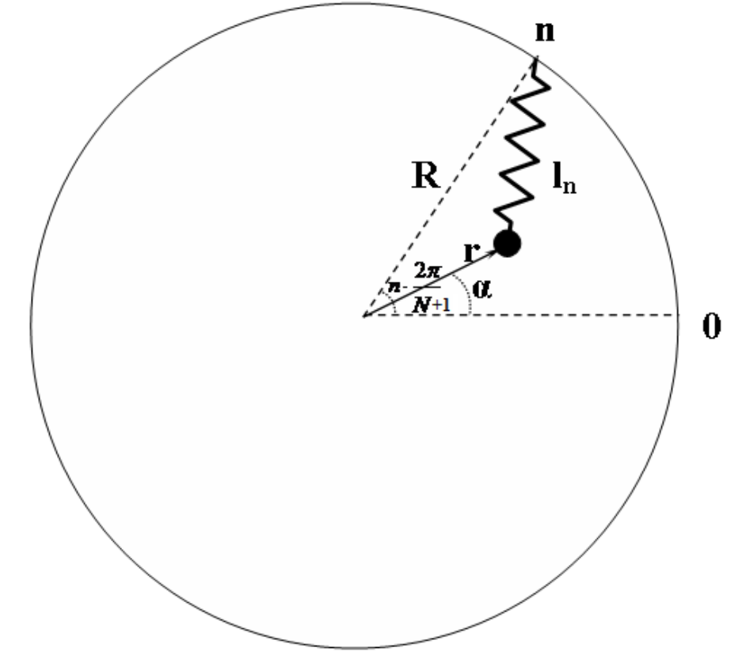
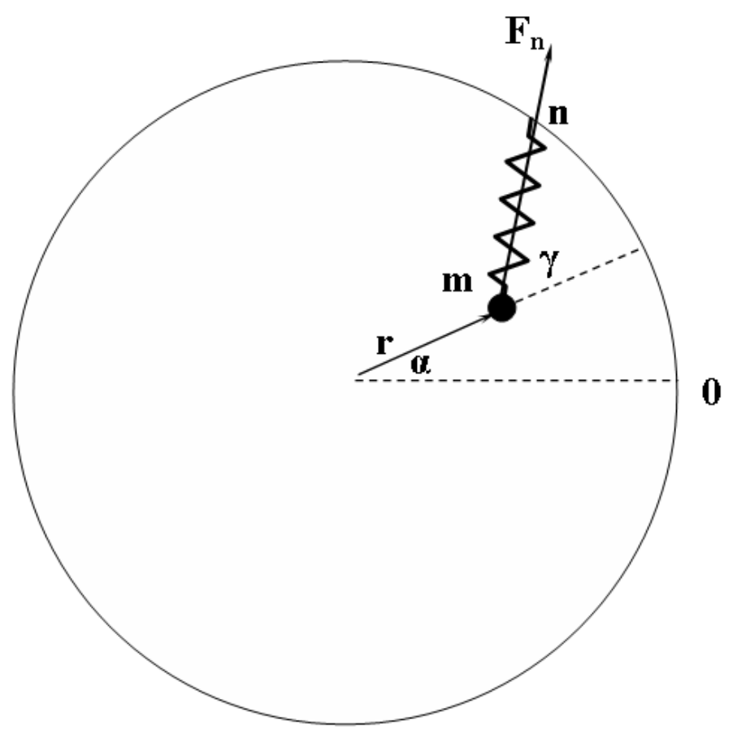

문제 1. 어디까지나 원 (Circles all the way) — 해설
원문: Romanian Master of Physics 2014, PROBLEM 1: MECHANICS 해설. 배점은 원문대로 pt로 표기한다.
A. 역학을 이용한 평면 곡선의 곡률 반지름(radius of curvature) 구하기 (Determining the radius of curvature of a planar curve by means of Mechanics)
a. 1.0 pt
\[\begin{aligned}v_x &= \frac{\mathrm{d}x}{\mathrm{d}t} = \dot x\\ v_y &= \frac{\mathrm{d}y}{\mathrm{d}t} = \frac{\mathrm{d}y}{\mathrm{d}x}\frac{\mathrm{d}x}{\mathrm{d}t} = f'(x)\cdot\dot x\end{aligned}\]
b. 1.0 pt
\[\begin{aligned}a_x &= \frac{\mathrm{d}v_x}{\mathrm{d}t} = \dot v_x = \ddot x\\ a_y &= \frac{dv_y}{dt} = \frac{d}{dt}\left[f'(x)\cdot\dot x\right] = f''(x)\cdot\dot x^2+f'(x)\cdot\ddot x\\ \vec a_\mathrm{t} &= \frac{\vec a\vec v}{v}\cdot\frac{\vec v}{v} = \frac{a_xv_x+a_yv_y}{\sqrt{v_x^2+v_y^2}}\cdot\frac{v_x\vec i+v_y\vec j}{\sqrt{v_x^2+v_y^2}} = \frac{v_x\left(a_xv_x+a_yv_y\right)\vec i+v_y\left(a_xv_x+a_yv_y\right)\vec j}{v_x^2+v_y^2}\end{aligned}\]
c. 1.0 pt
\[\begin{aligned}\vec a_\mathrm{n} &= \vec a-\vec a_\mathrm{t} =\\ &= a_x\vec i+a_y\vec j-\frac{v_x\left(a_xv_x+a_yv_y\right)\vec i+v_y\left(a_xv_x+a_yv_y\right)\vec j}{v_x^2+v_y^2} =\\ &= \frac{\left[a_x\left(v_x^2+v_y^2\right)-v_x\left(a_xv_x+a_yv_y\right)\right]\vec i+\left[a_y\left(v_x^2+v_y^2\right)-v_y\left(a_xv_x+a_yv_y\right)\right]\vec j}{v_x^2+v_y^2} =\\ &= \frac{\left(a_xv_y^2-a_yv_xv_y\right)\vec i+\left(a_yv_x^2-a_xv_xv_y\right)\vec j}{v_x^2+v_y^2} =\\ &= \frac{\left(a_xv_y-a_yv_x\right)\left(v_y\vec i-v_x\vec j\right)}{v_x^2+v_y^2}\end{aligned}\]
\[\left|\vec a_\mathrm{n}\right| = \frac{\left|a_xv_y-a_yv_x\right|}{\sqrt{v_x^2+v_y^2}}\]
d. 0.5 pt
\[\begin{aligned}R &= \frac{v^2}{a_\mathrm{n}} =\\ &= \frac{\sqrt{v_x^2+v_y^2}^{\,3}}{\left|a_xv_y-a_yv_x\right|} =\\ &= \frac{\left[\dot x^2+\left(f'(x)\cdot\dot x\right)^2\right]^{3/2}}{\left|\ddot x\cdot f'(x)\cdot\dot x-\left(f''(x)\cdot\dot x^2+f'(x)\cdot\ddot x\right)\cdot\dot x\right|} =\\ &= \frac{\left|\dot x\right|^3\left[1+f'^2(x)\right]^{3/2}}{\left|\dot x^3\cdot f''(x)\right|} =\\ &= \frac{\left[1+f'^2(x)\right]^{3/2}}{\left|f''(x)\right|}\end{aligned}\]
e. 0.5 pt
\[\left.\begin{aligned}f'(x_0) &= 2Ax_0\\ f''(x_0) &= 2A\end{aligned}\right\}\Rightarrow R = \frac{\left(1+4A^2x_0^2\right)^{3/2}}{2A}\]
f. 0.5 pt
\[f(x_0) = -1 \Rightarrow \sin2x_0 = -1 \Rightarrow x_0 = \frac34\pi\]
\[\left.\begin{aligned}f'(x_0) &= 2\cos\left(2\cdot\frac34\pi\right) = 0\\ f''(x_0) &= -4\sin\left(2\cdot\frac34\pi\right) = 4\end{aligned}\right\}\Rightarrow R = \frac14 = 0.25\,\mathrm{m}\]
\[T = 2\pi\sqrt{\frac Rg} \approx 1\,\mathrm{s}\]
B. 원 위의 용수철 (Springs on a circle)

g. 0.5 pt
코사인 법칙(cosine rule)에 따라
\[l_n^2 = R^2+r^2-2Rr\cos\left(\frac{2n\pi}{N+1}-\alpha\right)\]
h. 0.25 pt + 0.25 pt
\[\begin{aligned}E_\text{kin} &= \frac{m\left(\dot r^2+r^2\dot\alpha^2\right)}{2}\\ E_\text{pot} &= \sum_{n=0}^{N}\frac{kl_n^2}{2} =\\ &= \frac k2\sum_{n=0}^{N}\left[R^2+r^2-2Rr\cos\left(\frac{2n\pi}{N+1}-\alpha\right)\right]\end{aligned}\]
i. 0.25 pt + 0.25 pt
복소수 항을 갖는 등비급수(geometric progression)의 합을 이용할 수 있다.
\[\begin{aligned}\sum_{n=0}^{N}\left[\cos\left(\frac{2n\pi}{N+1}\right)+i\sin\left(\frac{2n\pi}{N+1}\right)\right] &= \sum_{n=0}^{N}e^{i\frac{2n\pi}{N+1}} =\\ &= \frac{\left(e^{i\frac{2\pi}{N+1}}\right)^{N+1}-1}{e^{i\frac{2\pi}{N+1}}-1} =\\ &= \frac{\cos2\pi+i\sin2\pi-1}{\cos\left(\dfrac{2\pi}{N+1}\right)+i\sin\left(\dfrac{2\pi}{N+1}\right)-1} =\\ &= 0\end{aligned}\]
따라서
\[\sum_{n=0}^{N}\cos\left(\frac{2n\pi}{N+1}\right) = \sum_{n=0}^{N}\sin\left(\frac{2n\pi}{N+1}\right) = 0\]
\[E_\text{pot} = \frac k2\left[\sum_{n=0}^{N}\left(R^2+r^2\right)-2Rr\sum_{n=0}^{N}\cos\left(\frac{2n\pi}{N+1}-\alpha\right)\right] = \frac{N+1}{2}k\left(R^2+r^2\right)\]
j. 0.5 pt

$n$번째 용수철이 물체에 작용하는 힘은 다음과 같다.
\[F_n = kl_n\]
사인 법칙(sine rule)에 따라
\[\frac{\sin\left(\pi-\gamma\right)}{R} = \frac{\sin\left(\dfrac{2n\pi}{N+1}-\alpha\right)}{l_n}\]
$F_n$의 돌림힘(torque)은 다음과 같다.
\[\begin{aligned}M_n &= r\cdot F_n\sin\gamma =\\ &= r\cdot kl_n\cdot\frac{R\sin\left(\dfrac{2n\pi}{N+1}-\alpha\right)}{l_n} =\\ &= kRr\sin\left(\frac{2n\pi}{N+1}-\alpha\right)\end{aligned}\]
전체 돌림힘은 다음과 같다.
\[M = \sum_{n=0}^{N}M_n = \sum_{n=0}^{N}kRr\sin\left(\frac{2n\pi}{N+1}-\alpha\right) = 0\]
따라서 각운동량(angular momentum)은 실제로 일정하다.
\[L = mr^2\dot\alpha\]
k. 0.5 pt
\[\begin{aligned}&E = E_\text{kin}+E_\text{pot} = \frac12m\left(\dot r^2+\frac{L^2}{m^2r^2}\right)+\frac12k(N+1)\left(R^2+r^2\right) = \text{constant} \Rightarrow\\ &\dot E = m\left(\dot r\ddot r-\frac{L^2}{m^2}r^{-3}\dot r\right)+k(N+1)r\dot r = 0 \Rightarrow\\ &\ddot r-\mathcal{L}^2r^{-3}+\omega^2r = 0\end{aligned}\]
l. 0.5 pt
\[\begin{aligned}&\dot r = \frac{2z\dot z}{2\sqrt{z^2+K}} = \frac{z\dot z}{r} \Rightarrow\\ &\ddot r = \frac{\left(\dot z^2+z\ddot z\right)r-z\dot z\dot r}{r^2} = \frac{\dot z^2+z\ddot z}{r}-\frac{z\dot z}{r^2}\cdot\frac{z\dot z}{r} \Rightarrow\\ &\frac{\dot z^2+z\ddot z}{r}-\frac{z^2\dot z^2}{r^3}-\frac{\mathcal{L}^2}{r^3}+\omega^2r = 0\\ &\left(\dot z^2+z\ddot z\right)\left(z^2+K\right)-z^2\dot z^2-\mathcal{L}^2+\omega^2\left(z^2+K\right)^2 = 0\\ &\left(\ddot z+\omega^2z\right)z^3+K\ddot zz+K\dot z^2+2K\omega^2z^2+K^2\omega^2-\mathcal{L}^2 = 0\end{aligned}\]
m. 0.5 pt
방정식의 첫째 항은 어차피 소거된다.
\[\begin{aligned}&-K\omega^2A^2\cos^2\left(\omega t+\phi_0\right)+K\omega^2A^2\sin^2\left(\omega t+\phi_0\right)\\ &\quad+2K\omega^2A^2\cos^2\left(\omega t+\phi_0\right)+K^2\omega^2-\mathcal{L}^2 = 0\end{aligned}\]
\[K\omega^2A^2+K^2\omega^2-\mathcal{L}^2 = 0 \Rightarrow A^2 = \frac{\mathcal{L}^2}{K\omega^2}-K\]
n. 0.5 pt
\[\begin{aligned}r(t) &= \sqrt{\frac{\mathcal{L}^2-K^2\omega^2}{K\omega^2}\cos^2\left(\omega t+\phi_0\right)+K} =\\ &= \frac1\omega\sqrt{\frac{\mathcal{L}^2\cos^2\left(\omega t+\phi_0\right)+K^2\omega^2\sin^2\left(\omega t+\phi_0\right)}{K}} =\\ &= \frac{1}{\omega\sqrt{2K}}\sqrt{\mathcal{L}^2\left[1+\cos\left(2\omega t+2\phi_0\right)\right]+K^2\omega^2\left[1-\cos\left(2\omega t+2\phi_0\right)\right]} =\\ &= \frac{1}{\omega\sqrt{2K}}\sqrt{\left(\mathcal{L}^2+K^2\omega^2\right)+\left(\mathcal{L}^2-K^2\omega^2\right)\cos\left(2\omega t+2\phi_0\right)}\end{aligned}\]
\[T_r = \frac{2\pi}{2\omega}\]
그러나 $r$의 값은 $\pi$만큼 회전할 때마다 반복되므로, 운동의 주기는 다음과 같다.
\[T = 2\pi\sqrt{\frac{1}{N+1}\,\frac mk}\]
o. 0.5 pt
\[\begin{aligned}&L = 0 \Rightarrow \mathcal{L} = 0 \Rightarrow r(t) = \sqrt K\left|\sin\left(\omega t+\phi_0\right)\right|\\ &L = 0 \Rightarrow \dot\alpha = 0 \Rightarrow \alpha = \text{constant}\end{aligned}\]
앞 문항에 따르면, $r = 0$이어서 $\alpha$가 정의되지 않는 순간을 제외하면, $\alpha$는 서로 반대 방향에 대응하는 두 개의 일정한 값을 갖는다. 따라서 이 경우 물체는 진폭 $\sqrt K$인 단순 조화 운동(simple harmonic motion)을 한다.
p. 0.5 pt
\[r = \text{constant} = \sqrt K \Rightarrow \mathcal{L}^2-K^2\omega^2 = 0 \Rightarrow \left|\frac Lm\right| = K\sqrt{\frac km(N+1)} \Rightarrow r = \sqrt{\frac{|L|}{\sqrt{(N+1)mk}}}\]
q. 0.5 pt
이 상황은 양의 상수 $k$를 갖는 $N+1$개의 용수철과, “음의” 강성 $-k$를 갖는 또 다른 $(N+1)/d$개의 용수철이 있는 것으로 생각할 수 있다. i. 에서 유도한 퍼텐셜 에너지 $E_\text{pot}$는 (적절한 $N$과 $k$를 쓰면) 두 집합 모두에 대해 성립하며, 각운동량은 여전히 보존된다. 따라서 j. 이후의 모든 결과는 $(N+1)$을 $(N+1)+[-(N+1)/d]$로 바꾸면 그대로 성립한다. 따라서
\[\omega'^2 = \left[N+1-\frac{N+1}{d}\right]\frac km \Rightarrow \omega' = \omega\sqrt{1-\frac1d}\]